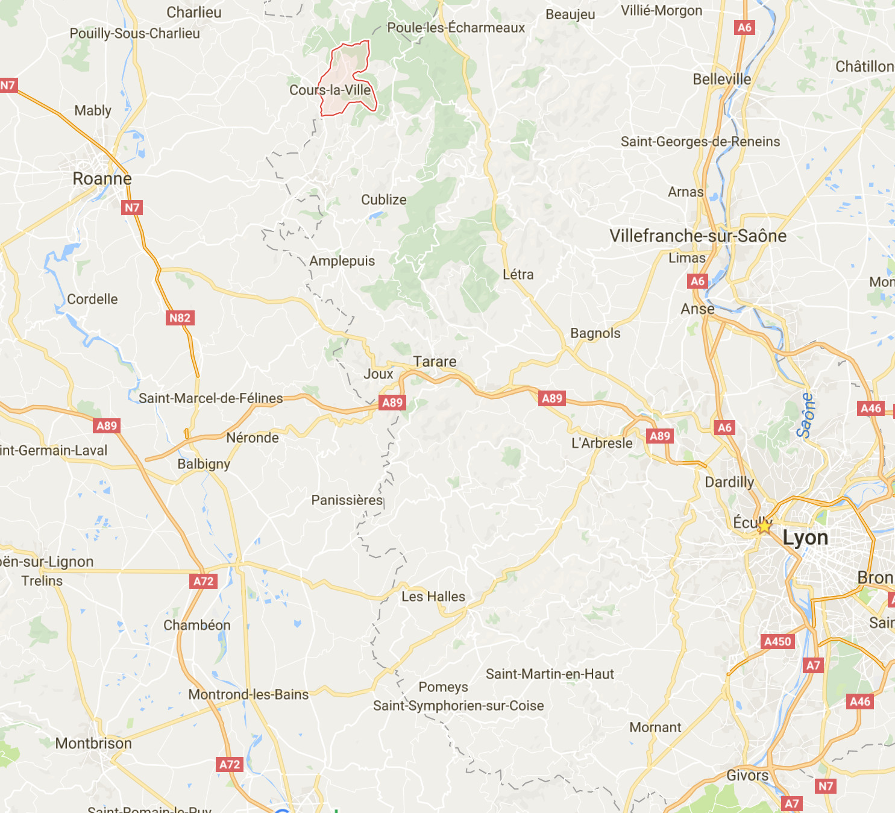
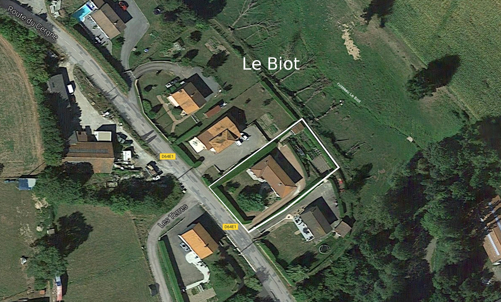

Maison spacieuse au vert
Vous voulez acheter une maison, spacieuse, au vert et en bon état, cette dernière peut vous intéresser.
Spacieux
Avec plus 200 m2 habitable (125 m2 au rez de chaussée) et 82 m2 au sous sol (le sous sol est complètement aménagé) vous bénéficiez d'un terrain de 2000 m2.Maison au vert
Cours est un village du Beaujolais vert. La richesse de cette partie du département du Rhône n'est pas le vin mais les sapins qui parsèment la commune. La maison est située à 1.5km du centre ville et elle se situe au bord des champs. Un petit ruisseau le Biot qui passe dans le pré en bas de la maison donne le nom à ce lieu dît.Maison en bon état
La maison construite en 1976 est en parfait état et à benéficier tout au long de sa vie de travaux de restauration ou d'amélioration. Vous pouvez en juger par vous même sur les photos. La maison est équipée entièrement de chauffage électrique et dispose d'une bonne isolation. Tous les murs extérieurs de la maison sont isolés avec des plaques de patre et laine de verre. Une toile goudronnée est disposée entre les liteaux et les tuiles pour limiter les pertes de chaleur (qui arrivent essentiellement par le toit dans une maison)Situation géographique
Rien de mieux qu'une carte pour vous rendre compte de l'emplacement de Cours la Ville. Le village est situé à 30 km de Roanne (30min) et de 80 km du centre de Lyon (1h20). Si vous voulez vous rendre à Lyon le train régional passe à Amplepuis et la distance par rapport à Lyon ou Roanne vous donne droit à l'abonnement travail. 
La vue Aerienne permet de voir la taille du terrain et son implantation dans la verdure. 
Les plans
La maison a été aggrandie en 1998. Voici les plans liés au permis de construire qui montre la surface de la maison (207 m2)
Les photos
Très bientôt vous pourrez visiter virtuellement la maison
Si vous êtes intéressés envoyez un mail à gui.ehret@free.fr